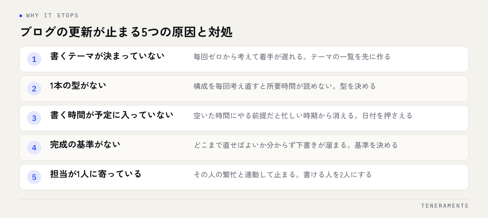

「週に何本書けばいいですか」という質問をよくいただきます。けれどもブログの更新頻度に、業種や規模を問わない正解の本数はありません。決めるべきは本数ではなく、半年後も同じペースで回っている状態をどう作るかです。順番を逆にすると、最初の1か月だけ本数が出て、そこで止まります。
📌 この記事の結論
更新頻度は「多いほど良い」ではなく、狙う検索語の数を、無理なく出せる速度で割って決めるものです。更新が止まる原因はやる気ではなく仕組みの側にあります。頻度を上げる前に、止まらない形を先に作ってください。
01更新頻度そのものが順位を決めるわけではない
検索エンジンが評価しているのは、更新の回数ではなく、検索した人の疑問に答えられているかどうかです。毎日更新していても、どの記事も同じことを浅く書いているなら順位は動きません。逆に本数が少なくても、1本が確実に答えになっていれば読まれます。
ただし、更新頻度が間接的に効く部分はあります。記事が増えるほど、答えられる検索語の種類が増えること。そして記事同士をつなぐ内部リンクの選択肢が増えることです。1本では線が引けませんが、10本あれば読者が次に読むものを示せます。
つまり頻度は、結果を直接動かす数字ではなく、結果が出るまでの速度を決める要素だと考えてください。急げば早く揃いますが、品質を落として急ぐと、揃っても効きません。
02自社に必要な本数を決める3つの材料
必要な本数は、次の3つを掛け合わせると出ます。感覚で「週1本」と決める前に、この3つを紙に書き出してください。
1つめは、答えるべき検索語の数です。お客様から実際に受けている質問、サービスを選ぶときに比較される項目、業種や地域を含む言い方。これを書き出すと、たいてい数十個になります。1つの検索語に1本と考えれば、必要な総本数が見えます。
2つめは、いつまでに揃えたいかです。検索から人が来るまでには時間がかかります。半年で揃えたいのか、1年かけるのかで1か月の本数が変わります。
3つめは、1本にかけられる時間です。構成を決め、書き、見直して公開するまでの実作業時間を一度計ってみてください。ここを甘く見積もったまま本数を決めると、必ず破綻します。
総本数 ÷ 期間で出た数が、1本あたりの作業時間の中に収まっているか。収まらなければ、期間を延ばすか、狙う検索語を絞ります。本数を増やすことで解決しようとしないことが大事です。
03頻度ごとの目安と、必要な体制
よく選ばれる3つのペースを並べます。どれが正しいというより、自社の体制に合うものを選んでください。
| ペース | 向く状況 | 必要な体制 | 気をつける点 |
|---|---|---|---|
| 週1本 | 狙う検索語が多く、早く揃えたい | 書く人を決め、毎週同じ曜日に時間を確保できる | 1本の質が落ちやすい。構成だけ先に溜めておく |
| 月2本 | 本業と並行して続けたい | 月の前半と後半に1日ずつ確保できる | 間が空くため、書く内容を事前に決めておく必要がある |
| 月1本 | まず止まらないことを優先したい | 1人でも回せる | 揃うまでに時間がかかる。既存記事の手入れを合わせて行う |
最も失敗が少ないのは、月1〜2本から始めて、回ってきたら増やす形です。最初に週1本と決めて3週で止まるより、月1本を1年続けたほうが記事は積み上がります。
04更新が止まる原因は、仕組みの側にある
止まるときの理由は、ほぼ次の5つに分けられます。どれも「忙しかった」という言い方で表に出てきますが、中身は違います。

- 書くテーマが決まっていない：毎回ゼロから考えるため、着手までに時間がかかります
- 1本の型がない：構成を毎回考え直すと、所要時間が読めません
- 書く時間が予定に入っていない：空いた時間にやる前提だと、忙しい時期から先に消えます
- 完成の基準がない：どこまで直せば公開していいか分からず、下書きのまま溜まります
- 担当が1人に寄っている：その人の繁忙と連動して、サイト全体の更新が止まります
止まったあとに再開するほうが重い
一度止まると、次に書くときは「何を書こうとしていたか」を思い出す作業から始まります。この思い出す時間が、書く時間より長くなることがあります。だからこそ、止まりそうになったら本数を落として続けるほうが、休んで再開するより軽く済みます。
対処はどれも単純で、原因と1対1で対応します。テーマの一覧を先に作る、1本の型を決めて毎回同じ手順で書く、書く日をカレンダーに入れる、完成の基準を決めておく、書ける人を2人にする。意志を強く持つことではなく、この5つを用意することが対処になります。見出しの型を先に用意しておく方法はSEO記事の見出し構成の作り方に整理しています。
05新しく書くか、既存記事を直すか
更新頻度を考えるとき、新規記事の本数だけで数えてしまいがちです。けれども記事が20本を超えてきたら、直す作業も更新に含めて配分したほうが成果が早く出ます。
すでに検索結果に出ている記事は、内容を足すだけで動くことがあります。一方、新しく書いた記事が読まれるまでには時間がかかります。つまり、同じ作業時間なら既存記事の手入れのほうが早く返ってくる場面があります。
目安としては、記事が少ないうちは新規中心、ある程度揃ってきたら「新規2本に対して既存1本を直す」くらいの配分が扱いやすいです。どの記事から直すかの決め方はブログ記事リライトのやり方にまとめています。
06増やすか減らすかは、何を見て判断するか
3か月ごとの見直しで見るのは、順位だけではありません。頻度の判断に使えるのは次の3つです。
1つめは、公開した本数と予定の差です。月2本の予定で1本しか出ていないなら、頻度が体制に合っていません。意志の問題として扱うと直らないので、予定の数を落とします。
2つめは、検索から入ってきた記事の種類です。どのテーマの記事が読まれているかが分かると、次に書くテーマの精度が上がります。読まれている方向に寄せれば、同じ本数でも成果が変わります。確認の仕方はSearch Consoleの使い方にまとめています。
3つめは、1本あたりの実作業時間の変化です。型が定着すると、同じ品質でも時間は短くなります。短くなったぶんを本数に回すのが、無理のない増やし方です。逆に時間が伸びているなら、テーマが難しすぎるか、完成の基準が曖昧になっています。
数字が揃わないうちは、「予定どおり出せたか」の一点だけで判断して構いません。続いていなければ、ほかの指標を見ても打ち手が決まらないからです。
07続けるための現実的な設計
最後に、止まらない形を作るための具体的な進め方です。
- 書くテーマを20個、先に一覧にする。毎回ゼロから考える状態をなくします
- 1本の型を決める。見出しの並びと、入れる要素（結論・表・よくある質問など）を固定します
- 公開日をカレンダーに入れる。月2本なら、月内の2日を先に押さえます
- 完成の基準を決める。「納得するまで直す」にすると公開できません
- 3か月ごとに頻度を見直す。回っていれば増やし、苦しければ減らします
サイトの作りが古いままだと、本数では追いつかない
記事を増やしても、サイト側の表示が遅い、スマートフォンで読みにくい、問い合わせへの経路が分かりにくいといった状態だと、読まれても次につながりません。更新頻度を上げる前に、サイトそのものを見直す段階かもしれません。判断の目安はホームページのリニューアル時期に整理しています。
毎日更新したほうが有利ですか？
しばらく更新が止まっていました。再開はどこから手を付ければよいですか？
外部に書いてもらう場合、頻度はどう決めればよいですか？
08まとめ：頻度は、止まらない形が決まってから決める
ブログの更新頻度は、狙う検索語の数と期間、そして1本にかけられる時間から決まります。多く書けば早く揃いますが、途中で止まれば残るのは書きかけの状態です。先に止まらない形を作り、そのうえで出せる本数を決める。この順番が、結果として一番早い道になります。
そして頻度は一度決めたら固定するものではありません。3か月ごとに見直し、回っていれば増やし、苦しければ落とす。続いていること自体が、次の判断材料になります。
TENERAMENTEなら、狙う検索語の洗い出しから記事の型づくり、公開後にどれを直すかの判断まで、サイトの設計とあわせてご一緒できます。更新が止まる原因がサイトの作りの側にある場合はホームページ・LP制作の段階から見直せますので、何本書くべきか迷っている段階でもお問い合わせからお気軽にご相談ください。